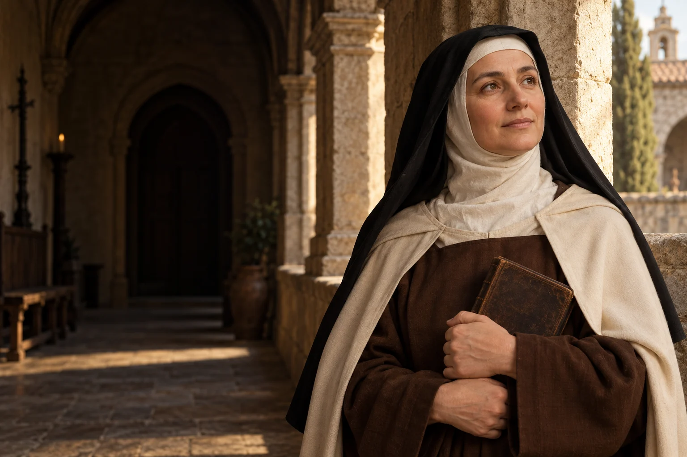

Czas na modlitwę
Wyznacz kilka spokojnych minut na modlitwę i potraktuj je jak czas ważnego spotkania.

1515–1582
Obchód liturgiczny: 15 października
Karmelitanka, reformatorka zakonu i doktor Kościoła.
Teresa z Ávili była karmelitanką, pisarką i reformatorką, która łączyła modlitwę z pracą nad tworzeniem wspólnot.
Poznaj historię jej życia →Życie wewnętrzne i codzienne działanie mogą wspólnie prowadzić do cierpliwej i wytrwałej przemiany.
Refleksja redakcji W Modlitwie.Przychodzi na świat w Ávili.
Zakłada pierwszy klasztor reformy.
Powstaje wspólnota związana z reformą męskiego Karmelu.
Umiera w Alba de Tormes.
Zostaje ogłoszona świętą.
Paweł VI nadaje jej ten tytuł.
Około 3 min czytania · 5 rozdziałów
Teresa de Cepeda y Ahumada urodziła się w Ávili w 1515 roku, w licznej hiszpańskiej rodzinie. Jako dziecko czytała żywoty świętych. Po śmierci matki i latach dorastania wstąpiła do klasztoru karmelitanek. Jej późniejsza autobiografia pokazuje, że droga powołania i modlitwy dojrzewała stopniowo, pośród chorób, ograniczeń i poszukiwania kierownictwa duchowego.
W Karmelu Teresa spotkała wspólnotę, w której życie duchowe rozwijało się przez wiele lat. Opisywała także własne rozproszenia i trudności. Dzięki temu jej opowieść nie przedstawia powołania jako drogi od początku wolnej od niepewności.
Teresa opisywała modlitwę jako relację z Bogiem, obejmującą całe życie, a nie wyłącznie wyjątkowe doświadczenia. Duże znaczenie miały dla niej także przyjaźnie, rozmowy i pomoc spowiedników. Jej pisma wyrastają z osobistej praktyki i prób rozeznawania: pokazują zarówno trud skupienia, jak i pragnienie coraz głębszej więzi z Bogiem.
W jej książkach modlitwa nie zastępuje relacji z ludźmi ani troski o wspólnotę. Teresa łączyła życie wewnętrzne z rozeznawaniem, korzystając z pomocy innych i ucząc się wytrwałości. Nie każda osoba doświadcza modlitwy w ten sam sposób.
W 1562 roku Teresa założyła w Ávili klasztor św. Józefa. Stał się początkiem odnowy karmelitańskiego życia. Mała wspólnota miała opierać się na modlitwie, prostocie i wzajemnej trosce. Powstanie klasztoru wymagało wielu decyzji i wsparcia biskupa. Teresa stopniowo zakładała kolejne domy, podróżując po Hiszpanii i mierząc się z przeszkodami organizacyjnymi.
Nowa wspólnota rodziła się w konkretnych warunkach społecznych i kościelnych XVI wieku. Jej organizacja wymagała pozwoleń, środków i współpracowników. To praktyczny wymiar dzieła, z którym Teresa mierzyła się obok pisania i modlitwy.
W odnowie męskiej gałęzi Karmelu współpracowała ze św. Janem od Krzyża; w 1568 roku powstała wspólnota w Duruelo. Jej dziełami są między innymi Księga życia, Droga doskonałości i Twierdza wewnętrzna. Pisała o modlitwie językiem obrazowym, pamiętając, że duchowość ma kształtować codzienne relacje i życie wspólne.
Twierdza wewnętrzna posługuje się obrazem drogi przez kolejne przestrzenie, aby mówić o życiu duchowym. Droga doskonałości powstała z myślą o wspólnocie i jej codziennym życiu. Obie książki zapraszają do uważnego czytania, nie tylko do zapamiętania pojedynczych haseł.
Teresa zmarła w 1582 roku w Alba de Tormes, podczas działalności związanej z kolejnymi fundacjami. Kanonizowano ją w 1622 roku, a Paweł VI ogłosił ją doktorem Kościoła w 1970 roku. Jej życie pokazuje, jak namysł, wytrwałość i zdolność organizowania innych mogą współistnieć z kontemplacją. Jej wspólnoty i pisma pozostają ważne dla rodziny karmelitańskiej.
Pamięć o Teresie obejmuje zarówno jej nauczanie, jak i zdolność budowania trwałych wspólnot. Jej pisma nadal czytają ludzie o różnych doświadczeniach. Podkreślają one znaczenie cierpliwości, przyjaźni i modlitwy zakorzenionej w życiu.
Jej życie nie było jedynie historią wewnętrznych przeżyć. Powstawanie klasztorów wymagało rozmów, podróży i decyzji podejmowanych wspólnie z innymi. Te zwyczajne zadania tworzyły równie ważny kontekst jej książek o modlitwie.
Wyznacz kilka spokojnych minut na modlitwę i potraktuj je jak czas ważnego spotkania.

Porozmawiaj z zaufaną osobą o sprawie, której nie chcesz dłużej odkładać.

Wybierz niewielką zmianę w swojej codzienności i ustal, jak ją zaczniesz.
Ojcze nasz, któryś jest w niebie, święć się imię Twoje; przyjdź królestwo Twoje; bądź wola Twoja jako w niebie, tak i na ziemi. Chleba naszego powszedniego daj nam dzisiaj; i odpuść nam nasze winy, jako i my odpuszczamy naszym winowajcom; i nie wódź nas na pokuszenie, ale nas zbaw ode złego. Amen.
Tradycyjny tekst modlitwy; utrwalony polski wariant.Ojcze nasz →